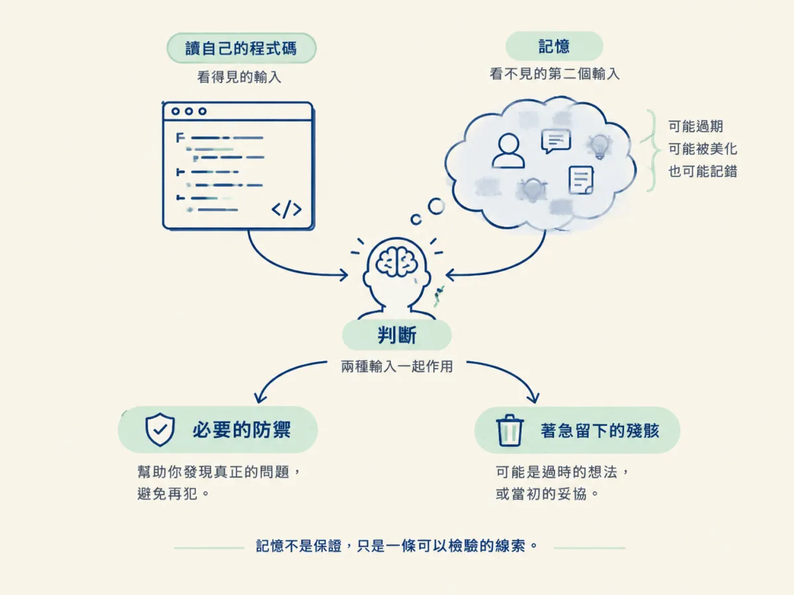
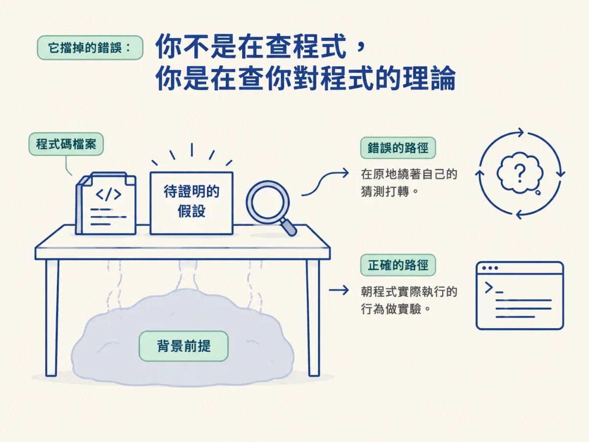

能說明除錯 AI 寫的碼時少了「作者記憶」這項隱形資源，並用「當陌生人寫的」讀法，避免對著自己猜測的意圖除錯。
週一，agent 幫你把登入流程重寫完了。測試是綠的，你也看過 diff，覺得沒問題。週三客服回報：使用者登入後，偶爾會被踢回登入頁。
你打開那個檔案，看到一段包著 try/catch 的 token 刷新邏輯，盯著它想：「這裡到底為什麼要包一層？」
如果你是自己寫的，你不會問這個問題。你會直接想起上線那天，refresh 端點偶爾回 502，所以你加了重試。那份記憶讓你在讀 code 之前就知道一半的答案。
換成 AI 寫的碼，這份記憶不存在。這一節要講清楚它少了什麼、少了之後你會犯哪個特定的錯，以及為什麼「把它當陌生人寫的」不是一句安慰，而是一個真的能執行的讀法。後面幾步的除錯流程，全都建立在這個起點上。
你除錯自己的程式時，其實同時在做兩件事：讀它，以及記得當初為什麼這樣寫。第二件事你幾乎不會注意到，因為它太自然了。
比方說，你看到一段看起來很多餘的 null 檢查。外人讀到的是「這裡多檢查了一次」；你讀到的是「上線那天有個 API 就是會回 null，不擋會炸」。同一個 if，你比別人多了一整段脈絡，於是你能判斷它是必要的防禦，還是某次著急留下的殘骸。
這份記憶也不是萬靈丹。它有時候會過期，甚至會美化你當初的判斷。你以為自己是為了 A 才這樣寫，其實是為了 B。但它至少給你一條可以檢驗的線索：你可以回頭問「如果當初是為了 A，那 A 現在還成立嗎？」

Agent 寫的碼，作者記憶是空的。更麻煩的是，很多人會覺得自己「看過它寫」就等於有記憶了。其實沒有。
你看到的是一次輸出的過程，不是每一行的理由。就像你看一支別人做菜的縮時影片：你看到他在某個時間點加了鹽，但你看不出他為什麼在這個時間點加、加的是哪一種鹽、如果換成另一種食材他會不會改。影片給你動作，不給你推理。
這個類比有一個地方不能照搬：做菜的廚師通常真的有一個理由，而且你可以倒帶、暫停、問他。Agent 的理由可能只是「這類程式碼通常長這樣」，而那個「通常」在你的專案裡未必成立。所以你連「它一定想過」都不能假設。
來源把結論講得很直接：第一步就是停止假裝你知道它是幹嘛的。
Read it like a stranger wrote it. One did.
而且這句話不是態度，是技術。它之所以是技術，是因為它擋掉一個很具體、也很容易發生的錯誤。
那個錯誤長這樣：你看著一行，心裡很快決定它「大概」想幹嘛，然後開始對著那個猜測除錯。
於是接下來半小時，你驗證的是自己的推論，不是程式的行為。來源的說法是：你已經不是在調查這段碼，你是在調查你對這段碼的理論。
看一個具體的對照。假設你看到：
if (!user) return null
這是示範用的片段，不是來源裡的程式。看到它，第一個猜測通常是「這裡在處理未登入的情況」。如果你直接把這個猜測當前提，你會一路往「未登入流程哪裡壞了」查。但如果真正的問題是：使用者已登入、但 profile 還沒建立完成時，user 也剛好是 null 呢？那你查的方向從一開始就錯了，而且你不會發現，因為你查的是自己的假設。
同一個片段，換成「陌生人讀法」，你會先把它寫成一句可被推翻的話：「這段碼假設 user 存在就代表 profile 已建立。」接著你去問：profile 是不是非同步建立的？有沒有可能 user 先出現、profile 晚幾百毫秒？這就是一條可以拿證據來檢驗的線索，而不是一個你已經相信的答案。
兩者的差異只有一個：你有沒有把「這行大概想幹嘛」從背景前提，搬到桌面上當成待證明的東西。搬上來之後，猜錯只是一個要被淘汰的假設；留在背景，猜錯就是整個調查的地基。

把猜測降級之後，你需要真的材料。來源給了三個地方：
這三個來源的用法、順序，以及三個都問不出答案時該怎麼辦，是下一步的內容。這裡先記得一件事：意圖是「要去收集的證據」，不是「你本來就該知道的背景」。
除錯自己的碼時，作者記憶默默做掉一半的工作，而你幾乎不會察覺。AI 寫的碼沒有這份記憶，看著它生成也補不回來，因為你看到的是輸出，不是推理。所以第一招是把碼當陌生人寫的來讀。這是技術問題，因為它阻止你把「這行大概想幹嘛」當成前提，然後花半小時調查自己對程式的理論。意圖得另外找：spec 的驗收條件、周邊程式的慣例、實際執行的行為。
知道了要從哪裡找，下一個問題就是順序：先看哪一個、看到什麼算數、什麼時候該停下來承認「這裡根本沒有人做過決定」。